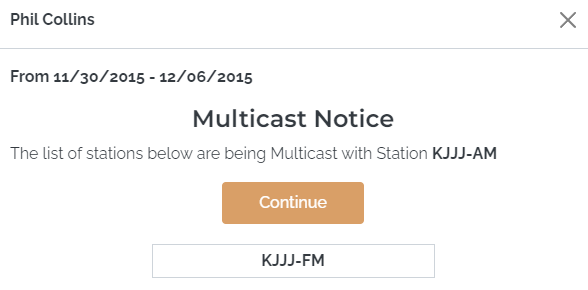
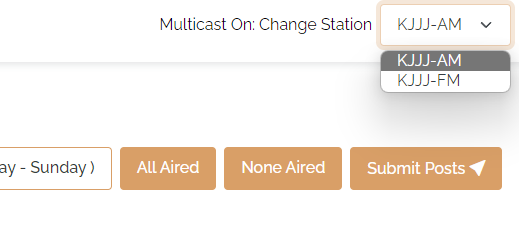
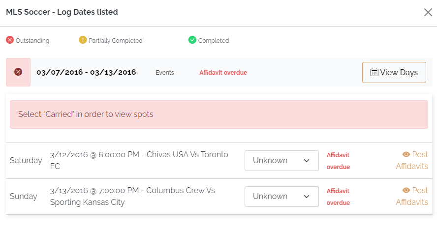
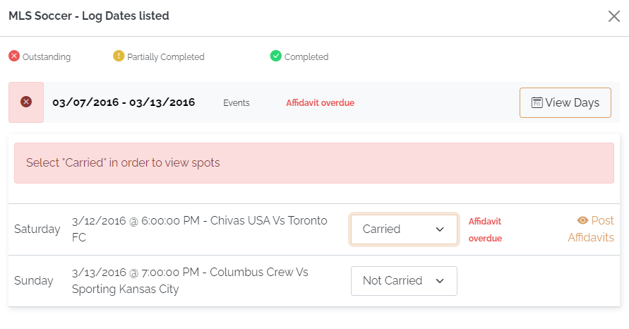

Additional Affidavit Features
Multicast
The multicast feature is designed to make the posting of affidavits for simulcast stations easier and more efficient by allowing the posting of an affidavit for one station to automatically update the affidavits for all the other stations in that multicast group for that vehicle, eliminating the need to post multiple, identical affidavits, and helping ensure all spots from the same multicast group are posted identically.
Multicast Notice
After agreeing to the Citation text, a "Multicast Notice" will appear that shows all the multicast stations that are grouped together for this vehicle.

Pressing Continue on the Multicast Notice page will advance to the Posting Screen.
Posting the Affidavit
The procedure for initially posting airing information for spots on multicast stations is the same as described in the earlier section about posting affidavits, however, all the stations in the multicast group will be posted simultaneously when one station in the group is posted.
Switching the Posting Station
On the Posting Screen, you can switch between the different stations in a multicast group by selecting the station from the "Change Station" dropdown in the upper right corner.

Making an Exception Post for a Station in a Multicast Group
If the System Setting "Keep Multicast in Sync" is not enabled, it's possible to make changes to one station in a multicast group and not have the changes made to it get propagated to the other stations in that multicast group, in order to handle an exceptional circumstance where one or several spots air differently on the different stations. With this setting, the following procedure can be used to do this:
- Update the air dates and times as needed for the spots that aired the same on all the multicast stations in the group, temporarily setting the air date/time for the exceptional spots to the air date and time of the primary station that is typically posted.
- After updating all the airing information, press the "Submit Posts" button.
- After pressing "Submit Posts", use the "Change Station" dropdown to switch to the Posting Screen for the station that aired the exceptional spot.
- Edit the air date and time as needed for the exceptional airing circumstance.
- Press "Submit Posts" to save the changed airing information.
When editing the airing information in this way (after having submitted posts the first time), the changes made will only affect the edited station's affidavit, not the affidavit for the other stations in the multicast group.
When "Keep Multicast in Sync" is enabled, the posting done for one station will always be copied to the other station, keeping the stations 100% in sync.
Monthly Posting
When an agreement is set to use the monthly posting feature, all the spots for the entire month can be posted at the same time.
For an agreement like this, the affidavit cannot be viewed and posted until the entire month is in the past (using the broadcast calendar), although the log will still be viewable each week as with the non-monthly posting method.
For an agreement that is posted monthly, when pressing the "Post Affidavits" button, instead of each week being available to choose from, the entire month will be listed.
When selecting an outstanding month to post, a message will appear that reads "All Programs and the spots they contain aired as scheduled?" with Yes and No question boxes beneath the text.
- Press "Yes" to mark all the spots for month as posted. This will post all the spots as aired for that vehicle and month. At this point there is nothing more to do with that vehicle and month as it has been fully posted and will appear as complete (green) in the list of affidavit months available.
- If one or more of the spots did not air as scheduled, press "No" on the "All Programs and the spots they contain aired as scheduled?" question and post the spot information following the procedure for updating affidavits, by posting the weeks or days individually rather than by month.
If a monthly affidavit has been partially posted, when returning to the list of outstanding affidavits, the affidavit will be shown in yellow to indicate that it's partially completed.
At this point, the remaining unposted spots for the month can be posted by clicking the partially completed affidavit month, then pressing "Yes" on the "All Programs and the spots they contain aired as scheduled" question. Selecting No on this question will take you to the list of weeks so that you can continue posting the individual weeks or days as needed until all the spots have been posted.
When a month has been fully posted, it will appear as complete (green) in the list of affidavit months that are available.
Pledge by Event Sports Vehicles
The "Pledge by Event" feature can be used with sports vehicles. With this feature, there are three possible statuses for each game for each affiliate: Carried, Not Carried, and Unknown.
- Carried: for events that will be carried (aired) by the affiliate
- Not Carried: for events they will not air
- Unknown: the default status used until the status is set to Carried or Not Carried by the affiliate
The "Pledge by Event" feature is enabled for a vehicle when the "Agreement Pledge by Event" checkbox is checked on in the Traffic System Vehicle Options screen on the Sports tab. Note that the web makegood feature is incompatible with the Pledge by Event feature. If "Agreement Pledge by Event" is checked on, then the web makegood feature is automatically disabled for that vehicle.
Posting a Pledge by Event Vehicle
After clicking a week with affidavits available, and pressing "View Days", a list of the available events will be displayed, as shown in the picture below.

To post the spots for an individual game, the user must select "Carried" from the dropdown list, press "Post Affidavits" and then post the spots on the Affidavit page. Only games set to the "Carried" status can be posted.
If an individual game will not be carried, select "Not Carried" from the dropdown list. This is used to indicate that the game will not be carried, and that no individual posting of spots will be done for it.
When setting a game to "Not Carried", the "Post Affidavit" button will not be shown for that game to indicate that there is nothing more to be done for that event.

All the games for a week must be set to either Carried and get fully posted, or Not Carried, before the affidavit week will be complete and ready for importing back to the Affiliate System. (A single week can have a mix of Carried and Not Carried games, or all are Carried, or all are Not Carried. Any combination is possible.)